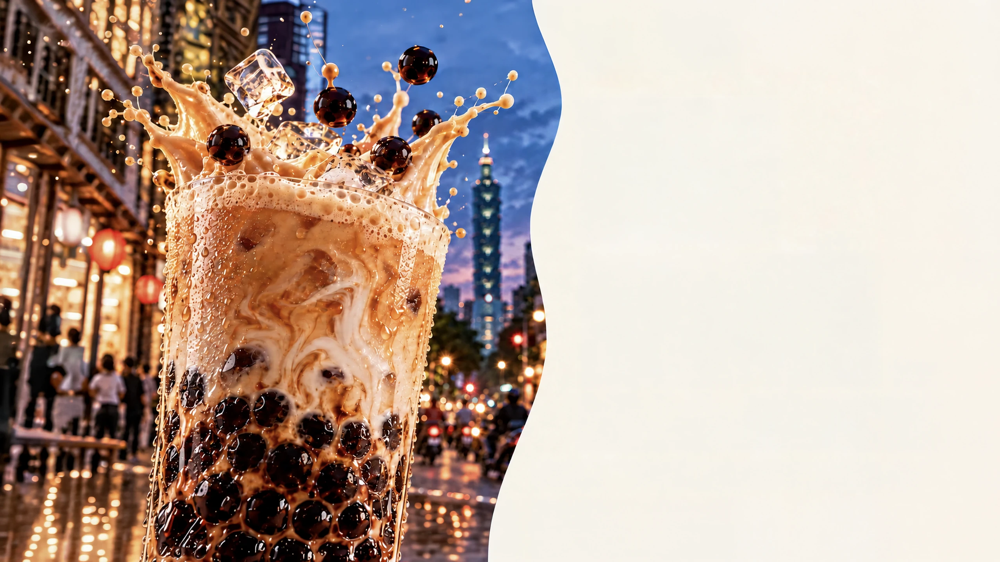
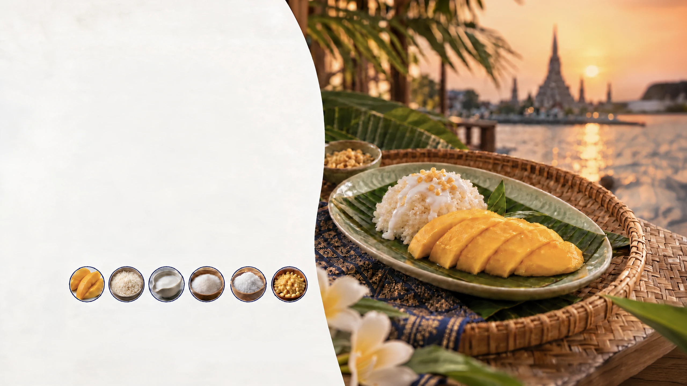
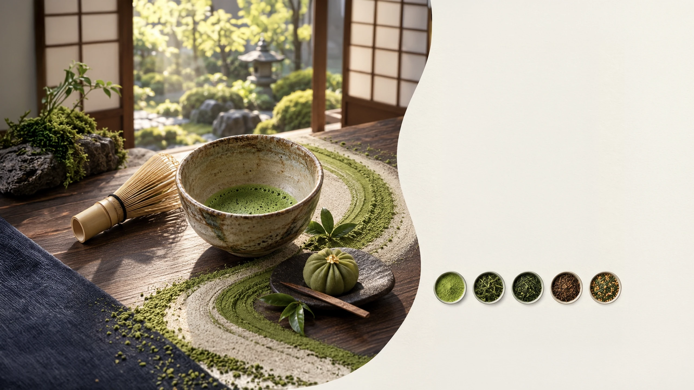
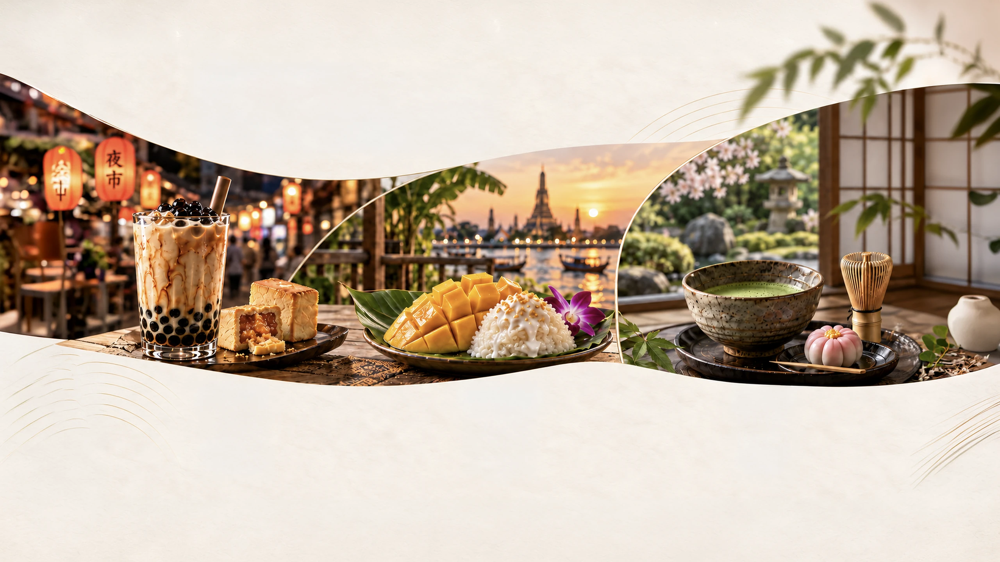

Synesthetic Flavor Across Cultures

Taiwan
Playful taste.
Layered joy.
In Taiwan, bubble milk tea is part of everyday life—picked up on the way to school, carried between errands, and shared while walking through neighborhood streets and night markets.
More than a beverage, it reflects the rhythm of local life: quick visits to tea shops, small moments with friends, and the comfort of something familiar.
- Tea leaves
- Fresh milk
- Brown sugar
- Boba pearls
- Playful
- Layered
- Shared
- Comforting
Where taste becomes fun, memory and comfort.

Thailand
Vibrant taste.
Awakened senses.
In Thailand, mango sticky rice is more than a dessert—it’s a part of everyday life.
When mango season arrives, you’ll see it everywhere: sold by street vendors, enjoyed in local markets, shared with family at home.
It’s a simple combination of glutinous rice, coconut milk and mango—made with familiar ingredients, prepared with care, and enjoyed together.
More than a sweet treat, it carries the warmth of the season, the joy of daily moments, and the spirit of Thai life.
 Mango
Mango Glutinous rice
Glutinous rice Coconut milk
Coconut milk Sugar
Sugar Salt
Salt Crispy mung beans
Crispy mung beans
Where contrast becomes pleasure.

Japan
Quiet flavors.
Deep feelings.
In Japan, tea is woven into everyday life—a moment of pause, connection, and care.
A stop at a wagashi shop in the afternoon.
A quiet seat in a neighborhood tea house.
Gatherings in spring, tea under cherry blossoms.
Hospitality in a warm bowl, shared with heart.
From morning rituals to evening wind-downs, tea brings balance to busy days and meaning to the simple moments.
Through the seasons, in homes and traditions, tea invites us to slow down and appreciate what truly matters.
 Matcha
Matcha Sencha
Sencha Gyokuro
Gyokuro Hojicha
Hojicha Genmaicha
Genmaicha
Where flavor becomes mindfulness.
